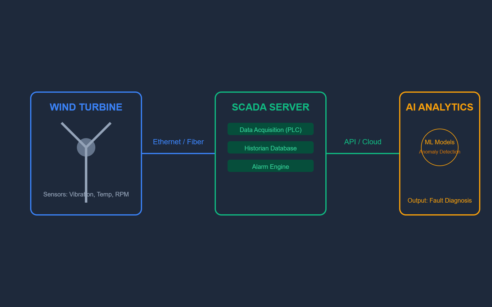

Muhammad Ahsan, PhD, Engr.
Researcher in Advancing Structural Health Monitoring and Intelligent Fault Diagnosis


Young Scientist Research Grant
Condition Monitoring and Fault Diagnosis using Advanced Machine Learning Methods.
Description
The primary objective of this research was to develop and evaluate high-performance machine learning models for condition monitoring and fault diagnosis using diverse vibration datasets. The study focused on benchmarking Artificial Neural Networks (ANN) , Convolutional Neural Networks (CNN) , and Deep Convolutional Neural Networks (DCNN) to surpass existing diagnostic accuracy in the literature. To ensure robust generalization, the models were validated against complex data sourced from multiple research institutions, encompassing rotating machinery with variable speeds, gearbox and bearing signals, and varying fault depths. By leveraging the hierarchical feature extraction capabilities of DCNNs and the pattern recognition strengths of CNNs, this research established a framework for identifying complex mechanical signatures that often elude traditional analysis, proving the effectiveness of deep learning in multi-scenario industrial environments.
Project Resources
Publications
- SPA 2024 Conference, Poznan, Poland (2024)
- Archives of Acoustics (2023)
- SPA 2023 Conference, Poznan, Poland (2023)
Funding & Support
This research was supported by:
Grant Agency Name
Project Code: 02/050/BKM23/0036
"Silesian University of Technology, Gliwice, Poland"
© Muhammad Ahsan 2026.